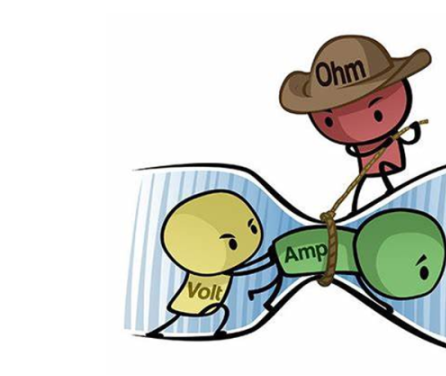
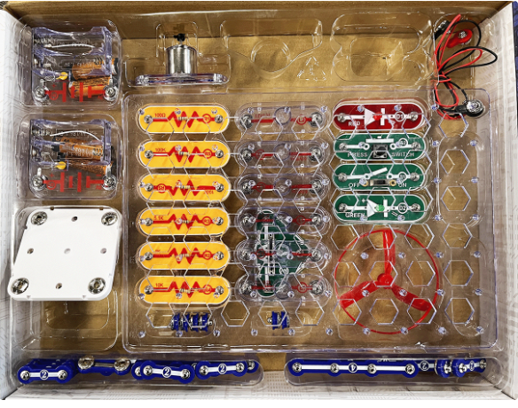

Class Introduction

My desire is for you to build a solid foundation of electrical problem solving. I expect even experienced technicians will find value in this diagnostic class. There's value in learning material from different perspectives. If you're an experienced tech, please have an open mind to new methods. I would never take credit for pioneering the methods I use. I learned them from others, and yet, I believe my approach to basic electrical diagnostics is still fundamentally different than many. My goal is for you to leave this class with a simplified, repeatable diagnostic method that gets you solutions to even those difficult intermittent failures.
If most of this information is new to you, you will always have access to this site. Review it often to help remember the concepts and diagnostic process. During class, please ask questions. I'm sure others have the same question and don't want to ask but these critical group conversations increase everyone's understanding.
Participate in the hands-on labs. I'm making a real effort to limit the time we spend studying written electrical theory. I have only included the theory I feel is very necessary. Instead, this class will focus on building, experimenting, making diagnostic plans from schematics, and using your diagnostic tools. Pay attention during lab time. Apply what you are learning. You will miss out on test content if you don't. I have intentionally added minimum requirements to the written exercises to control the pace and accountability in class.
Manufacturers write diagnostic guides that disregard the best practices I use to solve problems. I want you to be able to analyze the methods given to us, compare them to what I'm going to show you over the next few days, and evaluate the differences in methods. Finally, create your own methods, working within the 7-step diagnostic process, to find the root cause for failures.
- Take a look at this service manual page. Service Manual - "Low Voltage Testing."
- Look at Diagnostic Guide "Starting System Electrical Concern."
- Now look at the Diagnostic Guide "No Backup Alarm."
- Last, look at Diagnostic Guide - "Diagnosing a Blown Fuse."
- Follow the 7-Step procedure and build simple diagnostic plans, using schematics to make every failure a series circuit. Always use Ohm's Law to solve for current, remembering the three basic requirements of current flow (source, path, and load).
- Be precise and professional. Measure voltage to the hundredth of a volt. Pay attention to your meter settings and scale. Always have an expected result before performing a test and verify your meter connections. Use the proper, professional terminology. Electricity is not "juice."
- Attempt to test every circuit with current flowing, always aware of the difference between open circuit voltage and voltage-drop.
- The voltmeter is your primary weapon. Master its 5 fundamental readings.
Be careful when you relate electricity to hydraulics.
| Electricity | Hydraulics |
|---|---|
| Current - Flow of electrons from areas of high voltage to lower voltage | Flow - Movement of fluid produced by pumps (or some other force) |
| Resistance - A material's opposition to current flow. Hopefully this is the load in a circuit. | Restriction - Opposition to fluid flow either by an actuator or physical properties of a circuit. Hopefully this is the part of the circuit that performs work. |
|
Voltage - Charge. Potential difference in the concentration of electrons between two areas. We always begin with a set amount of source voltage. This voltage is consumed proportionally over each resistance encountered in the circuit. It's possible for a circuit to have voltage but no current. |
Pressure - Pressure is restriction to flow or force. Pressure in a hydraulic circuit increases as additional sources of restriction are added. A hydraulic circuit must have flow or force applied for there to be any pressure. |
This is a diagnostic foundations class. For this purpose, I intend to focus on machine battery circuits. Any circuit that is directly powered by the machine battery I will define as a battery circuit. This would include the unfused, high current starting/charging circuits, many of the fused circuits, and circuits involving relays. These circuits have enough current to make voltage-drop testing the most reliable diagnostic method and voltage-drop will be a focus in this class.
It may seem foolish to ignore controllers. Bobcat has designed their machines around controllers for a long time. It's difficult to find a circuit that does not involve one. I'm going to save controllers, communication busses, and sensor circuits for another class. I want to focus on some fundamental diagnostic principals first. That being said, voltage-drop is also the best testing method for the power and ground circuits to a controller so we will not forget those.
We will use Snap Circuit kits to explore basic electrical theories before working with powered Bobcat components. The Snap Circuit kits are lower voltage and current than the machines we work on but will allow us to easily rebuild circuits quickly.
Open the kit and experiment with the parts. Always build circuits with some load or device (resistor, bulb, or motor) connected to the batteries.
Snap Circuits Stored Properly:

Placing a wire directly across the battery snaps is a short circuit — never do it. Watch for circuits that give current an accidental path around your components; a short circuit path will prevent the rest of the circuit from ever working.
Explore the kit:
- Build one series and one parallel circuit.
- How many switches can you add to your lights? Add a switch to both the power and ground side of a circuit.
- Will the motor spin either direction? Can you make the propeller hit the ceiling?
- Can you make a circuit using both battery packs?
Parallel circuits provide more than one path for current to flow while a series circuit only has one path for current.
The trainer kit is built to resemble Bobcat components. It has a 12-volt power supply that will act as our machine battery. This would be the most dangerous component of the kit.
Don't stick anything into the power supply housing or short anything directly across its terminals.
The glow plugs will get hot. Don't touch them.
Experiment with the kit. Make all the circuits work.
- Can you make the lights shine dim and bright?
- How do you apply and release the pull/hold solenoid?
- Does air flow out of the vent holes while the HVAC fan is running?
- How hot do the glow plugs get? Use the thermometer.